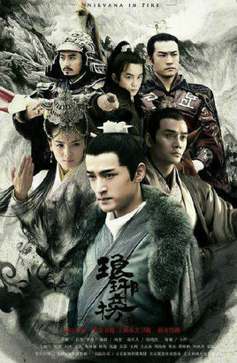

梅长苏（胡歌饰）本远在江湖，却名动帝辇。江湖传言：“江左梅郎，麒麟之才，得之可得天下。”作为天下第一大帮“江左盟”的首领，梅长苏“梅郎”之名响誉江湖。然而，有着江湖至尊地位的梅长苏，却是一个病弱青年、弱不禁风，背负着十多年前巨大的冤案与血海深仇，就连身世背后也隐藏着巨大的秘密。
原来，十二年前，南梁大通年间，北魏兴兵南下，赤焰军少帅林殊随父出征、率七万将士抗击敌军，不料七万将士因奸佞陷害含冤埋骨梅岭。林殊从地狱之门拾回残命，历经至亲尽失、削骨易容之痛，化身天下第一大帮江左盟盟主梅长苏。
十二年后，梅长苏假借养病之机、凭一介白衣之身重返帝都，从此踏上复仇、雪冤与夺嫡之路。面对曾有婚约的霓凰郡主（刘涛饰）、旧时的挚友靖王（王凯饰）以及过去熟悉的所有，他只能默默隐忍着一切，于看似不经意间，以病弱之躯只手掀起波波血影惊涛，辅佐明君靖王登上皇位，为七万赤焰忠魂洗雪了污名。
然而由于梁武帝晚年的昏乱治理，南朝境内纷乱四起，已代北魏而立的东魏趁机兴兵南下，朝中一时竟无人能够领兵。为解国难，梅长苏不顾身体病弱，毅然束甲出征，仅用三个月时间，带领大梁军队一举平定北境狼烟，还大梁以和平安定。而此时的梅长苏，也煎熬尽了自己最后的一点心血，在沙场上走完了自己的一生。